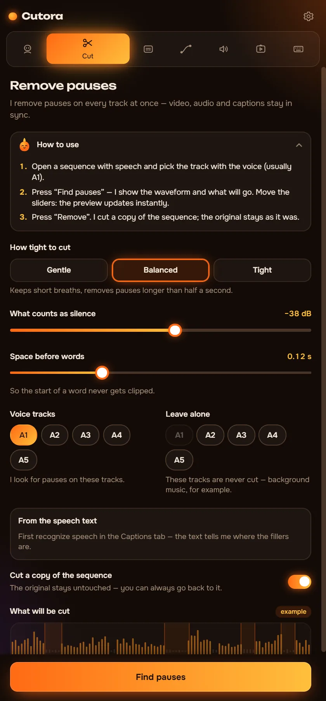
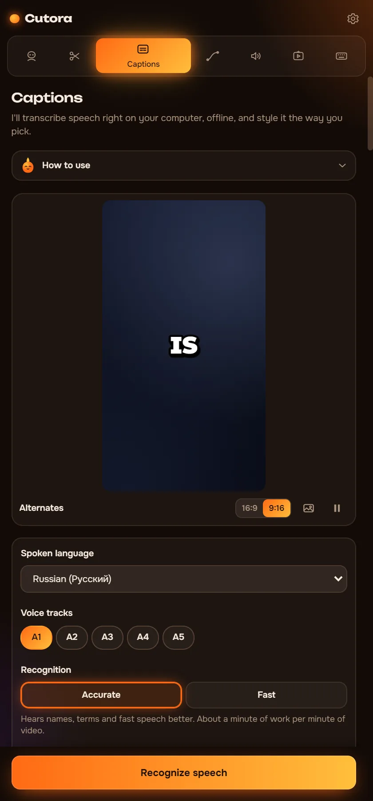
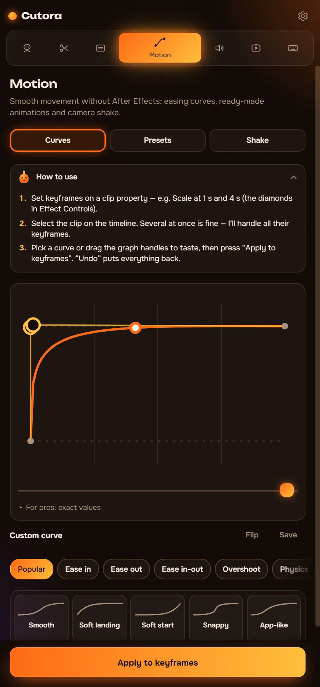
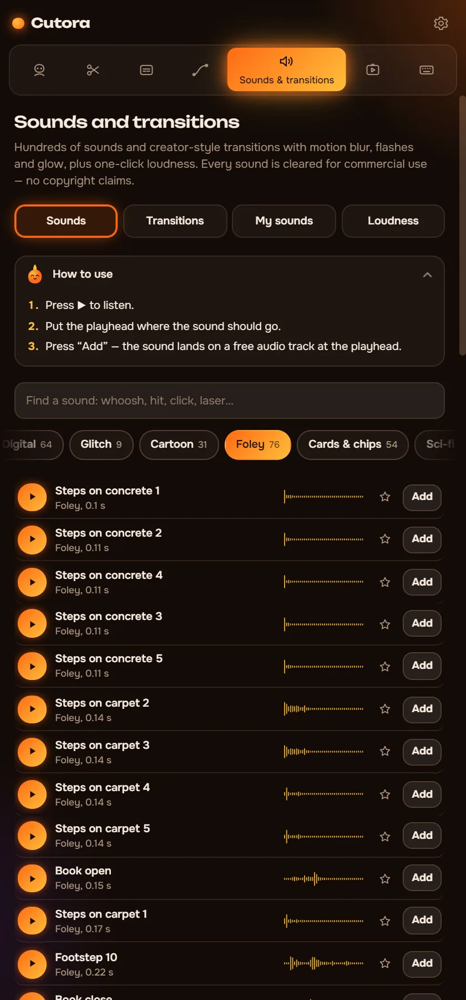
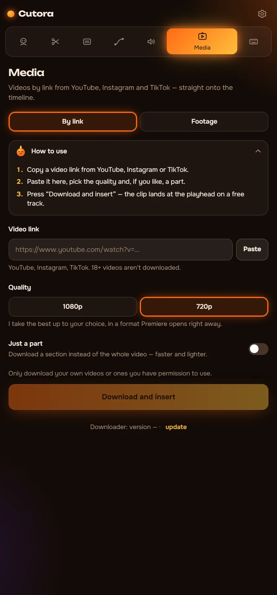
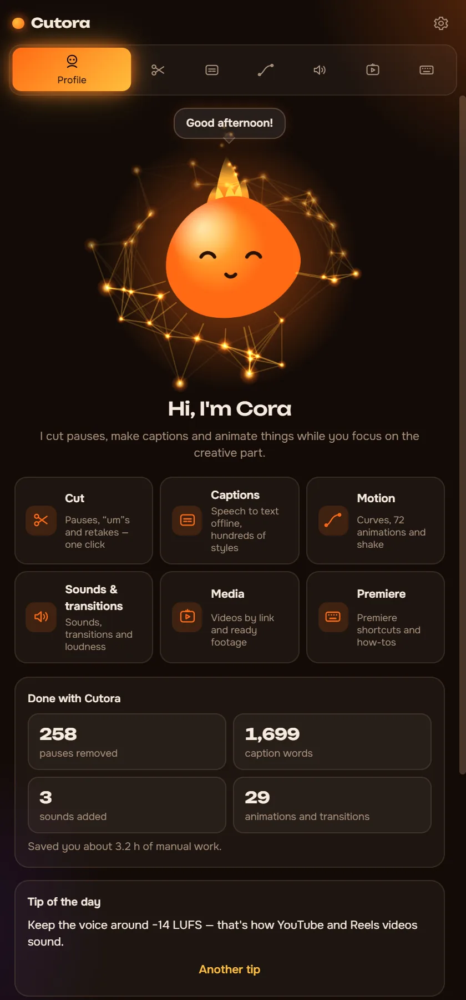

Cut pauses. Add captions. Make it move.
Cutora is a panel for Premiere Pro that does the slow parts of editing for you. It works on your computer, so your footage never leaves it.
- Windows, Premiere Pro 2022+
- Works offline
- Pay once, keep it
Hi, I'm Cora. Tap me!
See what gets cut before you cut
Cutora finds the pauses and marks them on the waveform. Choose what counts as silence, then cut. Here is a 90-second clip to play with.
- Video length
- 1:30
- Shorter by
- 0:00
In Premiere this cuts every track at once and closes the gaps. It works on a copy of your sequence, and one Ctrl+Z brings everything back.
Six modules, one panel
Each module does a job you would otherwise do by hand or with another plugin.
Remove pauses on every track at once
Video, voice and music stay in sync. You see every cut on the waveform before anything changes.
- Three strengths, or set the silence level yourself
- Removes “um”, “uh” and failed retakes using the transcript
- Cuts a copy of the sequence, the original stays untouched

Captions that move with the voice
Speech recognition runs on your computer. Pick a style, fix a word if needed, and the captions land on the timeline.
- About 90 spoken languages, no internet needed
- Hundreds of animated styles and 160+ fonts
- Edit the text later and update the captions in one click

Smooth motion without After Effects
Give your keyframes real easing, or drop a ready animation on a clip.
- Easing curves for any keyframes, including your own
- 72 ready animations: entrances, exits and punch zooms
- 25 camera shakes, from a soft handheld float to an explosion

Transitions with sound, in sync
Transitions go on an adjustment layer, and each one brings a matching sound.
- Real recorded whooshes, hits and risers
- Even out the loudness of the whole video in one click
- Add your own sound packs from any folder

Footage and videos by link
Paste a link and the video lands in your project. No downloaders, no converters.
- Import from YouTube, Instagram or TikTok by link
- A pack of green screen and gameplay clips
- Every insert can be undone like any other edit

Cora answers your questions
Stuck? Ask Cora how to do something in Cutora or in editing. She knows every tab and the basics of a good edit.
- Answers without internet
- Speaks all six interface languages
- A short tour on the first launch

Cutora for Premiere Pro
$29.99$39
One payment. No subscription.
- All six modules: Cut, Captions, Motion, Sounds, Media and Cora
- Your key works on two computers
- Works offline after one activation
- Interface in 6 languages
- Green screen and gameplay pack included
Pay by bank card via Lava.top or with crypto (USDT).
Questions
What do I need to run Cutora?
Windows 10 or 11 and Adobe Premiere Pro 2022 or newer.
Does it work on Mac?
Not yet. Cutora runs on Windows for now.
How do I get it after paying?
You get an email with a download link and your license key. The install guide on this site walks you through it in five minutes.
On how many computers can I use it?
On two. If you change computers, write to support and we'll move your key.
Does it need the internet?
Only to activate the key once and to import videos by link. Cutting, captions and motion work offline.
Which languages does it support?
The panel speaks English, Russian, Spanish, Portuguese, German and Arabic. Captions work in about 90 spoken languages.